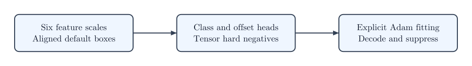
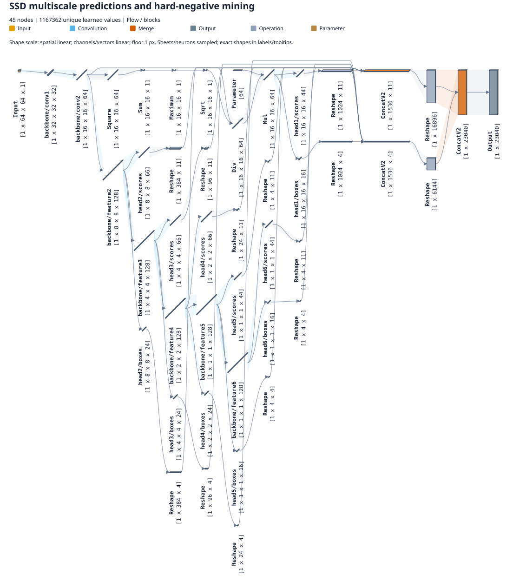
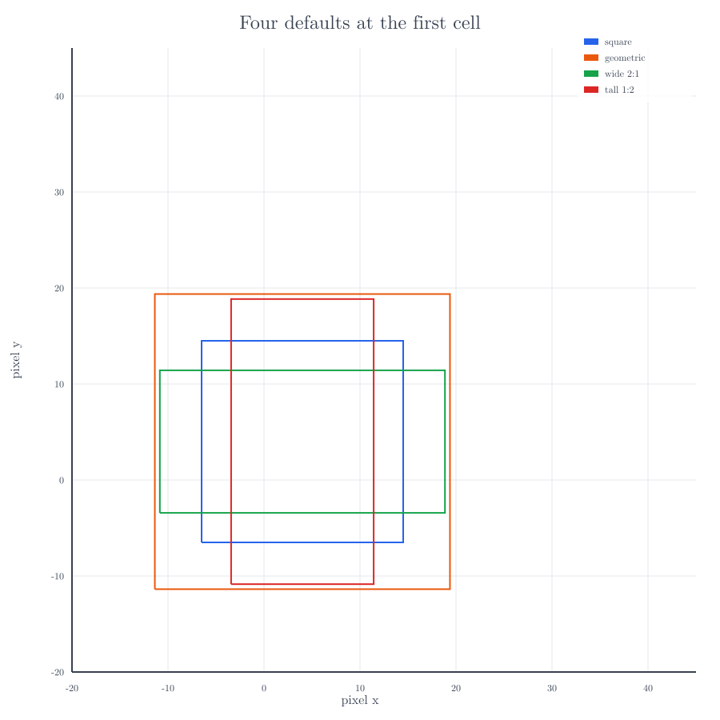
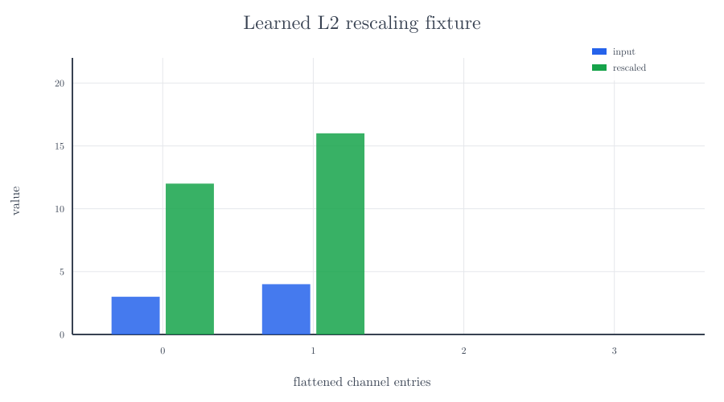
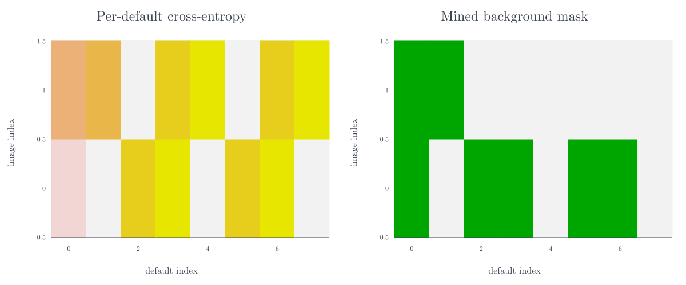
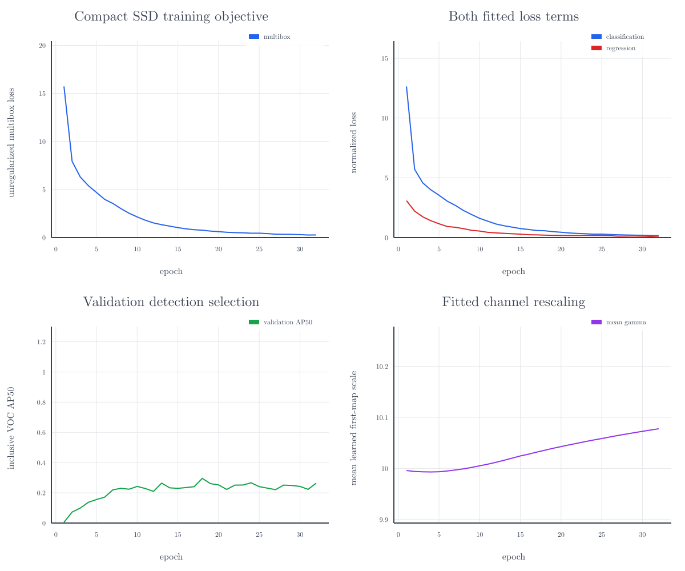
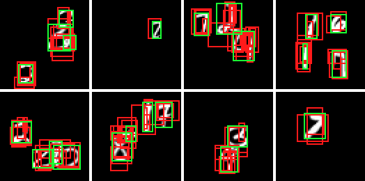

SSD multiscale predictions and hard-negative mining
Abstract
Dense one-shot detectors produce many more background boxes than objects. This report verifies SSD default geometry, learned channel rescaling and tensor hard-negative mining, checks the full initialized SSD300 forward/backward graph, then visibly fits the complete compact scene model with Adam and evaluates its selected held-out detections.
Source example: examples/cpp/source/nn/1_convolutional_neural_networks/1.6_object_detection/ssd.cpp.
The method
SSD predicts several default shapes from each cell of six feature maps. Class-agnostic offsets refine those defaults, while per-image3:1 hard-negative mining balances the classification objective. Background is the last class in this source port. The full VGG16 SSD300 architecture is checked separately from the explicitly adapted64-pixel model that is fitted below.
The concept diagram below is drawn by dm::graphics::Diagram. Its editable C++
source is the complete block below; regeneration uses the same datamunge toolchain
as the numerical examples. Exports consume the saved local SVG.
#include <dm/dm.hpp>
int main() {
std::filesystem::create_directories("build");
dm::graphics::Diagram diagram;
diagram.node("n0", {0.0, 0}, "Six feature scales\nAligned default boxes");
diagram.node("n1", {5.2, 0}, "Class and offset heads\nTensor hard negatives");
diagram.node("n2", {10.4, 0}, "Explicit Adam fitting\nDecode and suppress");
diagram.edge("n0", "n1").edge("n1", "n2");
diagram.save_svg("build/ssd_concept.svg");
}
Executed tensor architecture
All displayed prediction branches are joined only to keep them reachable in one diagram; the flattened display output is not postprocessed detection or pose inference.
This figure executes the inference configuration shown in the code, using a zero-valued shape probe without fitting or loading a checkpoint. Named stage boundaries group whole subgraphs where available; other nodes retain functional-layer detail. Exact batch-inclusive shapes and reachable parameter totals come from the trace. Shared linear scales map spatial dimensions and channel counts to blocks; the one-pixel visibility floor is disclosed in the legend. Labels use compact monospace text, rotate counterclockwise and sit beside their own glyphs. Arrows flow left to right; wide diagrams scroll at native size on the website.
#include <dm/dm.hpp>
int main() {
namespace n = dm::nn;
namespace m = n::models;
n::set_num_threads(2);
std::filesystem::create_directories("build");
m::DetectionSceneConfig cfg;
n::ParameterStore p(17);
cfg.scenes = 80;
cfg.seed = 11;
n::Module architecture_model(
[&](const n::Tensor& image) {
const auto out = m::SSD(p, image, 11, true);
return n::concat({out.logits.reshape({1, -1}), out.deltas.reshape({1, -1})}, 1);
},
"SSD multiscale predictions and hard-negative mining");
n::ModelPlotOptions options;
options.style = n::ModelPlotStyle::Flow;
options.detail = n::ModelPlotDetail::Blocks;
options.labels = {.type = n::ModelPlotLabel::NameAndShape, .size = 12, .wrap = 24};
options.spacing = {.layer = 24, .lane = 12, .label = 8, .margin = 20};
options.sizing.spatial_size = 96;
options.sizing.channel_size = 42;
options.sizing.minimum_extent = 1;
options.opacity = .8;
const auto diagram = architecture_model.plot(n::zeros({1, 64, 64, 1}), options);
diagram.save_svg("build/ssd_architecture.svg");
std::print(
"{} displayed nodes; {} reachable learned values.\n",
diagram.nodes().size(),
diagram.parameter_count());
}45 displayed nodes; 1167362 reachable learned values.

Simple example: default-box shapes and order
SSD predicts class scores and one four-offset box correction for every default
box at several feature resolutions. Each cell has a square of side s, a square
of side sqrt(s*next_s), and wide/tall reciprocal-ratio pairs. Four-default cells
use ratio 2; six-default cells also use ratio 3. Order is level, row, column,
then square/geometric/wide/tall shapes, matching the convolutional head layout.
Default boxes may cross the image boundary; decoding clips them later.
The first SSD300 cell is centred at (4,4). Its four shapes below use side 21
and geometric-mean side sqrt(21*45). Full grids 38/19/10/5/3/1 contain 8732
boxes; the compact 64-pixel variant uses grids 16/8/4/2/1/1 and 1536 boxes.
#include <dm/dm.hpp>
int main() {
namespace n = dm::nn;
namespace m = n::models;
const auto full =
m::SsdDefaultBoxes({38, 19, 10, 5, 3, 1}, {21, 45, 99, 153, 207, 261, 315},
{8, 16, 32, 64, 100, 300}, {4, 6, 6, 6, 4, 4}, n::DType::Float64);
const auto compact = m::SsdDefaultBoxes({16, 8, 4, 2, 1, 1}, {8, 16, 24, 32, 48, 64, 80},
{4, 8, 16, 32, 64, 64}, {4, 6, 6, 6, 4, 4});
if (full.shape() != n::Shape{8732, 4} || compact.shape() != n::Shape{1536, 4})
return 1;
auto p = dm::graphics::RPlot::create();
const std::vector<std::string> names = {"square", "geometric", "wide 2:1", "tall 1:2"};
const std::vector<dm::graphics::RGB> colours = {
{37, 99, 235}, {234, 88, 12}, {22, 163, 74}, {220, 38, 38}};
for (int i = 0; i < 4; ++i) {
const double y1 = full.at({i, 0}), x1 = full.at({i, 1}), y2 = full.at({i, 2}),
x2 = full.at({i, 3});
p.lines({x1, x2, x2, x1, x1}, {y1, y1, y2, y2, y1}, names[i], colours[i]);
}
p.title("Four defaults at the first cell")
.x_label("pixel x")
.y_label("pixel y")
.x_limits(-20, 45)
.y_limits(-20, 45);
std::filesystem::create_directories("build");
p.size(900, 900).margins(90, 30, 60, 60).save_svg("build/ssd_defaults.svg");
const auto centers = n::boxes_to_center(n::slice_axis(full, 0, 0, 4));
if (std::abs(centers.at({0, 0}) - 4) > 1e-12 ||
std::abs(centers.at({1, 2}) - std::sqrt(21. * 45)) > 1e-12)
return 1;
std::print("8732 full and 1536 compact defaults. First centre (4,4), square side21, "
"geometric side{:.6f}; wide/tall width-height ratios2/.5. Negative corners are "
"intentional unclipped defaults.\n",
centers.at({1, 2}));
}8732 full and 1536 compact defaults. First centre (4,4), square side21, geometric side30.740852; wide/tall width-height ratios2/.5. Negative corners are intentional unclipped defaults.

Simple example: learned channel L2 rescaling
The first feature map is normalized per spatial location and channel-rescaled:
y=x/sqrt(max(sum_channels(x²),1e-12))*gamma. Full SSD300 initializes gamma to
20; the compact model uses 10. Gamma is a learned parameter, not running state.
A [3,4] channel vector has norm five and becomes [12,16] at scale 20.
Zero vectors remain zero and finite. Their input derivative is gamma divided by
1e-6, so finite zero output does not imply zero input derivative.
Only the first prediction head sees the rescaled map; the backbone continues
from the original unscaled activations.
#include <dm/dm.hpp>
int main() {
namespace n = dm::nn;
n::ParameterStore p(17, n::DType::Float64);
const auto x =
n::from_vector(std::vector<double>{3, 4, 0, 0}, {1, 1, 2, 2}).requires_grad_();
const auto y = n::models::SsdNormalize(p, "fixture", x);
if (y.to_vector<double>() != std::vector<double>{12, 16, 0, 0})
return 1;
const auto g = n::grad(n::sum(y), {x, p.at("fixture/scale")});
if (std::abs(g[0].at({0, 0, 1, 0}) - 2e7) > 1e-8)
return 1;
auto plot = dm::graphics::RPlot::create();
plot.bars({-.18, .82, 1.82, 2.82}, x.to_vector<double>(), "input", {37, 99, 235}, .32)
.bars({.18, 1.18, 2.18, 3.18}, y.to_vector<double>(), "rescaled", {22, 163, 74}, .32)
.title("Learned L2 rescaling fixture")
.x_label("flattened channel entries")
.y_label("value")
.x_limits(-.6, 3.6)
.y_limits(0, 22);
std::filesystem::create_directories("build");
plot.size(900, 500).save_svg("build/ssd_normalization.svg");
std::print("[3,4,0,0] becomes[12,16,0,0]. Zero-vector input derivative{:.0f}; scale "
"derivatives{:.6f}/{:.6f}. Gamma is fitted in the optimizer loop below.\n",
g[0].at({0, 0, 1, 0}), g[1].at({0}), g[1].at({1}));
}[3,4,0,0] becomes[12,16,0,0]. Zero-vector input derivative20000000; scale derivatives0.600000/0.800000. Gamma is fitted in the optimizer loop below.

Hard-negative mining, the objective and its derivatives
Distinct greedy SSD matching first gives every target a different default box, even when targets prefer the same box; remaining defaults match at IoU at least .5. Background is the *last* class. For each image, mining ranks detached background cross-entropies and keeps at most three negatives per positive. Ties prefer the lower default index. The selected CE plus positive-anchor summed Smooth-L1 is divided by the *total batch positive count*, floored at one. Mining is per image, while normalization is across the batch.
The fixture has one positive in image 0 and two in image 1, so it selects three and six negatives. An independent softmax/Smooth-L1 oracle checks the complete loss and every logits/delta derivative. No optimizer runs in this check. An all-background batch has zero selected negatives, zero objective and exact zero gradients; it does not perform background-only learning.
#include <dm/dm.hpp>
int main() {
namespace n = dm::nn;
namespace m = n::models;
const auto type = n::DType::Float64;
const int A = 8, C = 3;
const auto raw = .8 * n::sin(.7 * n::arange(0, 2 * A * C).to(type)),
logits = raw.reshape({2, A, C}).detach().requires_grad_(),
deltas = n::full({2, A, 4}, .3, type).requires_grad_();
std::vector<std::int64_t> labels(2 * A, 2);
labels[0] = 0;
labels[A] = labels[A + 1] = 1;
const auto target = n::from_vector(labels, {2, A});
const auto out = m::SsdMultiboxLoss(logits, deltas, target, n::zeros({2, A, 4}, type));
const auto g = n::grad(out.loss, {logits, deltas});
const auto selected = out.selected_negatives.to_vector<bool>();
const auto values = raw.to_vector<double>();
double expected_loss = 0, error = 0;
// Independent bounded-logit host reference for the tensor objective and its derivatives.
for (int row = 0; row < 2; ++row) {
std::vector<double> ce(A);
std::vector<std::array<double, 3>> prob(A);
std::vector<int> bg;
int positives = 0;
for (int a = 0; a < A; ++a) {
double total = 0;
for (int c = 0; c < C; ++c) {
prob[a][c] = std::exp(values[(row * A + a) * C + c]);
total += prob[a][c];
}
for (int c = 0; c < C; ++c)
prob[a][c] /= total;
ce[a] = -std::log(prob[a][labels[row * A + a]]);
if (labels[row * A + a] == 2)
bg.push_back(a);
else
++positives;
}
std::stable_sort(bg.begin(), bg.end(), [&](int a, int b) {
return ce[a] > ce[b];
});
bg.resize(std::min(int(bg.size()), 3 * positives));
for (int a = 0; a < A; ++a) {
const bool positive = labels[row * A + a] != 2,
negative = std::find(bg.begin(), bg.end(), a) != bg.end();
if (selected[row * A + a] != negative)
return 1;
if (positive || negative)
expected_loss += ce[a] / 3.;
if (positive)
expected_loss += 4 * .5 * .3 * .3 / 3.;
for (int c = 0; c < C; ++c)
error = std::max(error, std::abs(g[0].at({row, a, c}) -
((positive || negative)
? (prob[a][c] - (c == labels[row * A + a])) / 3.
: 0.)));
for (int c = 0; c < 4; ++c)
error = std::max(error, std::abs(g[1].at({row, a, c}) - (positive ? .1 : 0.)));
}
}
if (std::abs(out.loss.item() - expected_loss) > 1e-12 || error > 1e-12)
return 1;
const auto all_bg = m::SsdMultiboxLoss(logits, deltas, n::full({2, A}, 2., n::DType::Int64),
n::zeros({2, A, 4}, type));
const auto zero = n::grad(all_bg.loss, {logits, deltas});
if (all_bg.loss.item() != 0 || n::max(n::abs(zero[0])).item() != 0 ||
n::max(n::abs(zero[1])).item() != 0)
return 1;
const auto ce = -n::sum(n::one_hot(target, C, 1, 0, type) * n::log_softmax(logits, -1), {2});
auto a = n::plot_tensor_map(n::reverse(ce, {0}), 0, n::max(ce).item());
a.title("Per-default cross-entropy")
.x_label("default index")
.y_label("image index")
.x_limits(-.5, 7.5)
.y_limits(-.5, 1.5);
auto b = n::plot_tensor_map(n::reverse(out.selected_negatives.to(type), {0}), 0, 1);
b.title("Mined background mask")
.x_label("default index")
.y_label("image index")
.x_limits(-.5, 7.5)
.y_limits(-.5, 1.5);
std::filesystem::create_directories("build");
dm::graphics::RLayout::create(1, 2).add(a).add(b).size(1200, 500).fit_panels().save_svg(
"build/ssd_mining.svg");
std::print(
"Per-image positives1/2 select3/6 backgrounds. CE{:.12f}+regression{:.12f}=loss{:.12f}; "
"analytic derivative maximum error{:.12f}. All-background objective and both gradient "
"tensors are exact zero.\n",
out.classification.item(), out.regression.item(), out.loss.item(), error);
}Per-image positives1/2 select3/6 backgrounds. CE5.261781030636+regression0.180000000000=loss5.441781030636; analytic derivative maximum error0.000000000000. All-background objective and both gradient tensors are exact zero.

Full SSD300 architecture and gradient check
The complete source model uses VGG16 convolution blocks, normalized conv4_3, dilation-six fc6, fc7 and four extra blocks. Six independent convolutional heads produce 8732 predictions across grids 38/19/10/5/3/1. The following executes the full 300-pixel, 21-class forward and backward pass and checks every learned tensor. It validates initialized architecture and gradients; it does not fit a VOC detector or load pretrained weights. The actual optimizer demonstration below fits the complete compact source architecture on digit scenes.
#include <dm/dm.hpp>
int main() {
namespace n = dm::nn;
n::set_num_threads(2);
n::ParameterStore p(17);
const auto image = n::sin(.13 * n::arange(0, 300 * 300 * 3)).reshape({1, 300, 300, 3});
const auto net = n::models::SSD(p, image);
if (p.count() != 26285486 || net.anchors != 8732)
return 1;
std::print("| level | grid | channels | defaults/cell | predictions "
"|\n|---:|---:|---:|---:|---:|\n");
for (int l = 0; l < 6; ++l) {
if (net.features[l].shape() != n::Shape{1, net.cells[l], net.cells[l], net.channels[l]})
return 1;
std::print("| {} | {}x{} | {} | {} | {} |\n", l + 1, net.cells[l], net.cells[l],
net.channels[l], net.boxes_per_cell[l],
net.cells[l] * net.cells[l] * net.boxes_per_cell[l]);
}
const auto gradients =
n::grad(n::mean(n::square(net.logits)) + n::mean(n::square(net.deltas)), p.parameters());
double minimum = std::numeric_limits<double>::infinity(), maximum = 0;
for (const auto &g : gradients) {
const double norm = n::sqrt(n::sum(n::square(g))).item();
if (!std::isfinite(norm) || norm <= 0)
return 1;
minimum = std::min(minimum, norm);
maximum = std::max(maximum, norm);
}
std::print("Full SSD300: {} learned scalars, {} predictions, {} learned tensor gradients "
"all finite/nonzero; L2 norms[{:.9f},{:.9f}]. This is an initialized "
"architecture check, not a fitted benchmark.\n",
p.count(), net.anchors, gradients.size(), minimum, maximum);
}| level | grid | channels | defaults/cell | predictions |
|---|---|---|---|---|
| 1 | 38x38 | 512 | 4 | 5776 |
| 2 | 19x19 | 1024 | 6 | 2166 |
| 3 | 10x10 | 512 | 6 | 600 |
| 4 | 5x5 | 256 | 6 | 150 |
| 5 | 3x3 | 256 | 4 | 36 |
| 6 | 1x1 | 256 | 4 | 4 |
Full SSD300: 26285486 learned scalars, 8732 predictions, 71 learned tensor gradients all finite/nonzero; L2 norms[0.000053089,28.780025482]. This is an initialized architecture check, not a fitted benchmark.
Data and explicit compact SSD fitting
The bounded split uses 64 fit/16 validation scenes from the first 2048 official MNIST training digits, seed 11, and eight test scenes from the first 512 official test digits, seed 22. The actual first training scenes are shown below. The compact network has stride-two 32/64 convolutions and five 128-channel feature stages, with grids 16/8/4/2/1/1. Its first L2 scale initializes to ten. Default sides are 8/16/24/32/48/64 with a next side 80 for the final geometric-mean box. This is an explicit 64-pixel adaptation with 1167362 learned scalars and 1536 predictions, not a width-scaled or pretrained SSD300.
#include <dm/dm.hpp>
int main() {
namespace n = dm::nn;
n::set_num_threads(2);
std::filesystem::path cache;
if (const auto *p = std::getenv("DATAMUNGE_DATA_DIR"))
cache = p;
else if (const auto *p = std::getenv("XDG_CACHE_HOME"))
cache = std::filesystem::path(p) / "datamunge/datasets";
else
cache = std::filesystem::path(std::getenv("HOME")) / ".cache/datamunge/datasets";
dm::datasets::fetch("mnist", (cache / "mnist").string());
const auto train = n::load_mnist((cache / "mnist").string(), "train");
n::models::DetectionSceneConfig cfg;
cfg.scenes = 80;
cfg.seed = 11;
const auto scenes = n::models::MakeTensorDetectionScenes(
n::slice_axis(train.images, 0, 0, 2048), n::slice_axis(train.labels, 0, 0, 2048), cfg);
std::vector<n::Tensor> boxes(scenes.boxes.begin(), scenes.boxes.begin() + 8);
const auto preview = n::models::DrawDetectionBoxes(n::slice_axis(scenes.images, 0, 0, 8),
boxes, {.1, 1., .2});
std::filesystem::create_directories("build");
n::save_image_grid(preview, "build/ssd_scenes.png", 4, 0., 1., 4, 1., 2);
std::int64_t objects = 0;
for (const auto &b : scenes.boxes)
objects += b.shape()[0];
std::print("80 generated training/validation scenes; {} accepted digits. Preview: first "
"eight training scenes with tight green boxes.\n",
objects);
}80 generated training/validation scenes; 195 accepted digits. Preview: first eight training scenes with tight green boxes.

All six prediction heads and the learned L2 scale are created before Adam.
The visible loop uses learning rate .001, batch four and 32 epochs (512 updates),
with the multibox objective plus .00005*sum(kernel²). Biases and the rank-one
scale vector are excluded from L2; the optimizer still fits both. This bounded
batch/epoch schedule differs explicitly from the full source run. There is no
batch norm, dropout or moving model state. Validation inclusive VOC AP50 selects
the parameter checkpoint, with strict improvement; test scenes are used only
after restoration.
Inference considers every foreground class independently. Per image/class it keeps the top 200 scores strictly above .05, decodes class-agnostic offsets, clips boxes to the image and removes zero-area boxes, then applies IoU .45 NMS and a cap of 100 detections/image. Pre-NMS score ties prefer the *higher* default index, preserving the source pair-sort convention; this differs from mining's lower-index tie rule. The native tests cover both choices.
#include <dm/dm.hpp>
int main() {
namespace n = dm::nn;
namespace m = n::models;
n::set_num_threads(2);
std::filesystem::path cache;
if (const auto *p = std::getenv("DATAMUNGE_DATA_DIR"))
cache = p;
else if (const auto *p = std::getenv("XDG_CACHE_HOME"))
cache = std::filesystem::path(p) / "datamunge/datasets";
else
cache = std::filesystem::path(std::getenv("HOME")) / ".cache/datamunge/datasets";
dm::datasets::fetch("mnist", (cache / "mnist").string());
const auto digits = n::load_mnist((cache / "mnist").string(), "train");
m::DetectionSceneConfig cfg;
cfg.scenes = 80;
cfg.seed = 11;
const auto scenes = m::MakeTensorDetectionScenes(
n::slice_axis(digits.images, 0, 0, 2048), n::slice_axis(digits.labels, 0, 0, 2048), cfg);
const auto anchors = m::SsdDefaultBoxes({16, 8, 4, 2, 1, 1}, {8, 16, 24, 32, 48, 64, 80},
{4, 8, 16, 32, 64, 64}, {4, 6, 6, 6, 4, 4});
std::vector<std::int64_t> val_rows(16);
std::iota(val_rows.begin(), val_rows.end(), 64);
std::vector<int> val_ids(val_rows.begin(), val_rows.end());
n::ParameterStore p(17);
{
n::NoGradGuard guard;
const auto warm = m::SSD(p, n::zeros({1, 64, 64, 1}), 11, true);
if (warm.anchors != anchors.shape()[0])
return 1;
}
if (p.count() != 1167362)
return 1;
// Inference borrows this scope's p/anchors; every class and default is handled by tensor kernels.
const auto detect = [&](const m::TensorDetectionScenes &data,
const std::vector<std::int64_t> &rows) {
n::NoGradGuard guard;
const auto net =
m::SSD(p, 2. * n::gather(data.images, n::from_vector(rows)) - 1., 11, true);
return m::DecodeSsdDetections(net.probabilities, net.deltas, anchors, n::from_vector(rows),
64, 64);
};
// Annotation conversion is presentation of existing tensor boxes/IDs, with no box arithmetic.
const auto truth_records = [](const m::TensorDetectionScenes &data,
const std::vector<std::int64_t> &rows) {
std::vector<m::DetectionEvaluationTruth> out;
for (auto row : rows) {
const auto boxes = n::boxes_to_vector(data.boxes[row]);
const auto labels = data.labels[row].to_vector<int>();
for (std::size_t i = 0; i < boxes.size(); ++i)
out.push_back({int(row), labels[i], boxes[i]});
}
return out;
};
const auto validation_truth = truth_records(scenes, val_rows);
n::OptimizerConfig adam_config;
adam_config.kind = n::OptimizerKind::Adam;
n::Optimizer adam(p, .001, adam_config);
n::BatchOrder batches(64, 4, 29);
std::vector<n::Tensor> kernels;
for (const auto &leaf : p.parameters())
if (leaf.dim() >= 2)
kernels.push_back(leaf);
std::filesystem::create_directories("build");
const std::string checkpoint = "build/ssd_best.npz";
std::vector<double> epochs, losses, ce_trace, reg_trace, ap_trace, scale_trace;
double best = -1;
int selected = 0, steps = 0;
std::print(
"| epoch | multibox loss | CE | regression | val AP50 |\n|---:|---:|---:|---:|---:|\n");
for (int epoch = 1; epoch <= 32; ++epoch) {
batches.begin_epoch();
double total = 0, total_ce = 0, total_reg = 0;
std::size_t seen = 0;
for (auto rows = batches.next(); !rows.empty(); rows = batches.next()) {
const auto net =
m::SSD(p, 2. * n::gather(scenes.images, n::from_vector(rows)) - 1., 11, true);
const auto targets = m::MakeSsdTargets(anchors, scenes, rows, 10);
const auto objective =
m::SsdMultiboxLoss(net.logits, net.deltas, targets.labels, targets.targets);
n::Tensor penalty = n::zeros({});
for (const auto &kernel : kernels)
penalty = penalty + n::sum(n::square(kernel));
if (!std::isfinite(objective.loss.item()))
return 1;
total += objective.loss.item() * rows.size();
total_ce += objective.classification.item() * rows.size();
total_reg += objective.regression.item() * rows.size();
seen += rows.size();
adam.minimize(objective.loss + .00005 * penalty);
++steps;
}
const auto metric =
m::EvaluateDetectionDataset(m::DetectionEvaluationRecords(detect(scenes, val_rows)),
validation_truth, val_ids, false, true);
epochs.push_back(epoch);
losses.push_back(total / double(seen));
ce_trace.push_back(total_ce / double(seen));
reg_trace.push_back(total_reg / double(seen));
ap_trace.push_back(metric.ap50.item());
scale_trace.push_back(n::mean(p.at("normalize/scale")).item());
if (metric.ap50.item() > best) {
best = metric.ap50.item();
selected = epoch;
p.save(checkpoint);
}
std::print("| {} | {:.6f} | {:.6f} | {:.6f} | {:.6f} |\n", epoch, losses.back(),
ce_trace.back(), reg_trace.back(), ap_trace.back());
}
p.load(checkpoint);
const auto restored =
m::EvaluateDetectionDataset(m::DetectionEvaluationRecords(detect(scenes, val_rows)),
validation_truth, val_ids, false, true);
if (std::abs(restored.ap50.item() - best) > 1e-12)
return 1;
const auto test_digits = n::load_mnist((cache / "mnist").string(), "test");
cfg.scenes = 8;
cfg.seed = 22;
const auto test =
m::MakeTensorDetectionScenes(n::slice_axis(test_digits.images, 0, 0, 512),
n::slice_axis(test_digits.labels, 0, 0, 512), cfg);
std::vector<std::int64_t> test_rows(8);
std::iota(test_rows.begin(), test_rows.end(), 0);
std::vector<int> test_ids(test_rows.begin(), test_rows.end());
const auto output = detect(test, test_rows);
const auto records = m::DetectionEvaluationRecords(output);
const auto truth = truth_records(test, test_rows);
const auto voc = m::EvaluateDetectionDataset(records, truth, test_ids, false, true),
coco = m::EvaluateDetectionDataset(records, truth, test_ids, true);
// Preserve the exact evaluated boxes and scores for an independent AP recount.
std::vector<double> saved_predictions, saved_truth;
for(const auto& detection:records){saved_predictions.insert(saved_predictions.end(),{double(detection.image),double(detection.label),double(detection.score),double(detection.box[0]),double(detection.box[1]),double(detection.box[2]),double(detection.box[3])});}
for(const auto& target:truth){saved_truth.insert(saved_truth.end(),{double(target.image),double(target.label),double(target.box[0]),double(target.box[1]),double(target.box[2]),double(target.box[3]),double(target.difficult),double(target.crowd)});}
n::save_npz("build/ssd_detections_"+std::string("0")+".npz",{{"predictions",n::from_vector(saved_predictions,{std::int64_t(records.size()),7})},{"truth",n::from_vector(saved_truth,{std::int64_t(truth.size()),8})},{"images",n::from_vector(test_ids)},{"metrics",n::stack({voc.ap50,coco.ap75,coco.ap},0)}});
std::vector<n::Tensor> predicted;
const auto image_ids = output.images.to_vector<int>();
for (int image = 0; image < 8; ++image) {
std::vector<std::int64_t> index;
for (std::size_t j = 0; j < image_ids.size(); ++j)
if (image_ids[j] == image)
index.push_back(std::int64_t(j));
predicted.push_back(n::gather(output.boxes, n::from_vector(index)));
}
const auto green = m::DrawDetectionBoxes(test.images, test.boxes, {.1, 1., .2}),
red = m::DrawDetectionBoxes(test.images, predicted, {1., .1, .1}),
raw = test.images * n::ones({1, 1, 1, 3});
n::save_image_grid(n::where(n::any(n::not_equal(green, raw), {3}, true), green, red),
"build/ssd_detections.png", 4, 0., 1., 4, 1., 2);
std::filesystem::create_directories("figures");
std::filesystem::copy_file("build/ssd_detections.png", "figures/ssd_detections.png",
std::filesystem::copy_options::overwrite_existing);
auto a = dm::graphics::RPlot::create();
a.lines(epochs, losses, "multibox", {37, 99, 235})
.title("Compact SSD training objective")
.x_label("epoch")
.y_label("unregularized multibox loss")
.y_limits(0, 1.3 * *std::max_element(losses.begin(), losses.end()));
auto b = dm::graphics::RPlot::create();
b.lines(epochs, ce_trace, "classification", {37, 99, 235})
.lines(epochs, reg_trace, "regression", {220, 38, 38})
.title("Both fitted loss terms")
.x_label("epoch")
.y_label("normalized loss")
.y_limits(0, 1.3 * std::max(*std::max_element(ce_trace.begin(), ce_trace.end()),
*std::max_element(reg_trace.begin(), reg_trace.end())));
auto c = dm::graphics::RPlot::create();
c.lines(epochs, ap_trace, "validation AP50", {22, 163, 74})
.title("Validation detection selection")
.x_label("epoch")
.y_label("inclusive VOC AP50")
.y_limits(0, 1.3);
auto d = dm::graphics::RPlot::create();
d.lines(epochs, scale_trace, "mean gamma", {147, 51, 234})
.title("Fitted channel rescaling")
.x_label("epoch")
.y_label("mean learned first-map scale")
.y_limits(*std::min_element(scale_trace.begin(), scale_trace.end()) - .1,
*std::max_element(scale_trace.begin(), scale_trace.end()) + .2);
dm::graphics::RLayout::create(2, 2)
.add(a)
.add(b)
.add(c)
.add(d)
.size(1200, 1000)
.fit_panels()
.save_svg("build/ssd_training.svg");
std::print(
"{} learned scalars, {} Adam updates; selected epoch {}, validation AP50 {:.6f}. Test: "
"{} digits in eight scenes, inclusive VOC AP50 {:.6f}, COCO AP75 {:.6f}, AP50:95 "
"{:.6f}, {} detections. Selected mean learned L2 scale {:.6f}; no moving model state.\n",
p.count(), steps, selected, best, truth.size(), voc.ap50.item(), coco.ap75.item(),
coco.ap.item(), records.size(), n::mean(p.at("normalize/scale")).item());
}| epoch | multibox loss | CE | regression | val AP50 |
|---|---|---|---|---|
| 1 | 15.725381 | 12.642122 | 3.083258 | 0.005010 |
| 2 | 7.922913 | 5.711837 | 2.211075 | 0.072686 |
| 3 | 6.303242 | 4.570053 | 1.733190 | 0.098963 |
| 4 | 5.393195 | 3.989365 | 1.403830 | 0.137438 |
| 5 | 4.687282 | 3.536729 | 1.150553 | 0.155712 |
| 6 | 3.971835 | 3.047543 | 0.924292 | 0.171336 |
| 7 | 3.548932 | 2.691045 | 0.857887 | 0.219639 |
| 8 | 3.008637 | 2.265620 | 0.743017 | 0.230057 |
| 9 | 2.527813 | 1.923453 | 0.604360 | 0.223854 |
| 10 | 2.144483 | 1.602821 | 0.541662 | 0.242426 |
| 11 | 1.798457 | 1.364570 | 0.433887 | 0.228472 |
| 12 | 1.519922 | 1.132293 | 0.387630 | 0.209325 |
| 13 | 1.336656 | 0.984601 | 0.352055 | 0.264078 |
| 14 | 1.184766 | 0.868729 | 0.316037 | 0.232914 |
| 15 | 1.033319 | 0.749794 | 0.283525 | 0.229524 |
| 16 | 0.907193 | 0.673040 | 0.234153 | 0.234875 |
| 17 | 0.811812 | 0.590008 | 0.221804 | 0.240586 |
| 18 | 0.765565 | 0.565361 | 0.200205 | 0.295486 |
| 19 | 0.671907 | 0.493702 | 0.178205 | 0.260802 |
| 20 | 0.613545 | 0.441720 | 0.171825 | 0.252491 |
| 21 | 0.547479 | 0.382284 | 0.165196 | 0.222466 |
| 22 | 0.510041 | 0.345684 | 0.164357 | 0.250926 |
| 23 | 0.491662 | 0.317572 | 0.174091 | 0.251449 |
| 24 | 0.449597 | 0.281158 | 0.168439 | 0.266506 |
| 25 | 0.453046 | 0.286734 | 0.166312 | 0.240965 |
| 26 | 0.409399 | 0.255913 | 0.153486 | 0.230938 |
| 27 | 0.348382 | 0.231723 | 0.116658 | 0.220922 |
| 28 | 0.337323 | 0.212703 | 0.124620 | 0.250996 |
| 29 | 0.328972 | 0.200201 | 0.128771 | 0.248607 |
| 30 | 0.303122 | 0.187009 | 0.116114 | 0.242593 |
| 31 | 0.263352 | 0.168548 | 0.094804 | 0.222954 |
| 32 | 0.270717 | 0.155845 | 0.114873 | 0.263902 |
1167362 learned scalars, 512 Adam updates; selected epoch 18, validation AP50 0.295486. Test: 23 digits in eight scenes, inclusive VOC AP50 0.203434, COCO AP75 0.069719, AP50:95 0.090949, 105 detections. Selected mean learned L2 scale 10.035644; no moving model state.


Regenerate adjacent views from this run
#include <dm/dm.hpp>
int main(){std::filesystem::copy_file("build/ssd_detections.png","build/export_ssd_detections.png",std::filesystem::copy_options::overwrite_existing);}Conclusion
The executed results above describe the current selected checkpoint and its held-out detection quality. Small scene sets and bounded schedules do not establish architecture rankings. Inspect localization, missed targets and false positives together with validation selection and the actual prediction gallery.
Default shapes/order, 3-4-5 rescaling and the complete mined loss/derivatives are checked before fitting. The initialized full SSD300 verifies all8732 predictions and every learned tensor gradient; it is not presented as a trained benchmark. The compact model then fits visibly with learned scale parameters and validation-only checkpoint selection, retaining actual held-out mistakes in its gallery.
References
- [Liu et al. (2016), SSD: Single Shot MultiBox Detector](https://arxiv.org/abs/1512.02325).
- [TorchVision official SSD implementation](https://github.com/pytorch/vision/blob/main/torchvision/models/detection/ssd.py).
- [COCO official box evaluator](https://github.com/cocodataset/cocoapi/blob/master/PythonAPI/pycocotools/cocoeval.py).